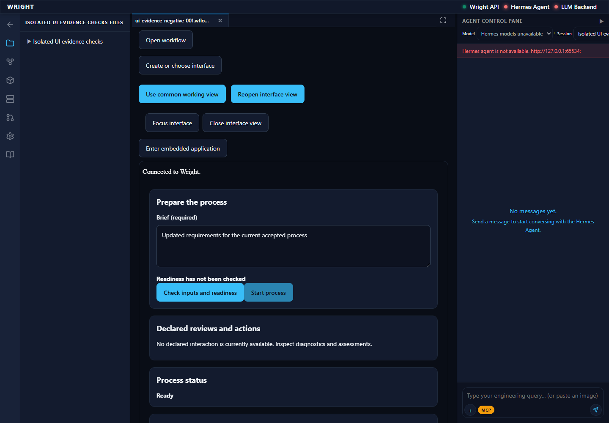
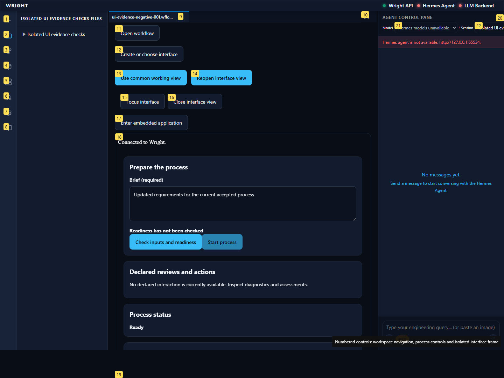
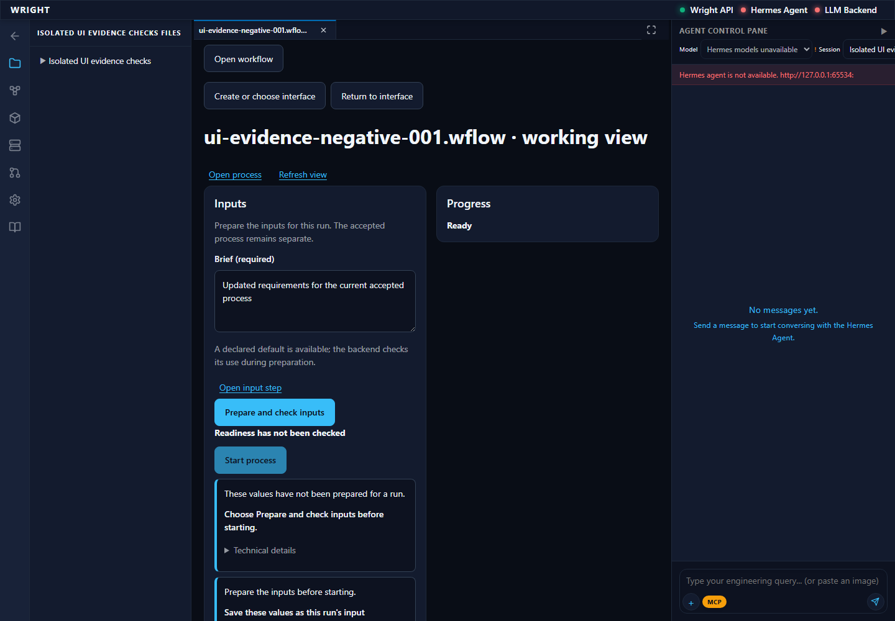
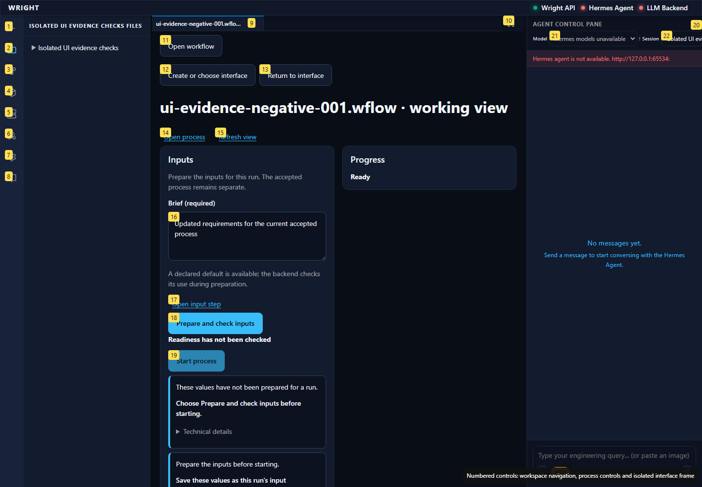
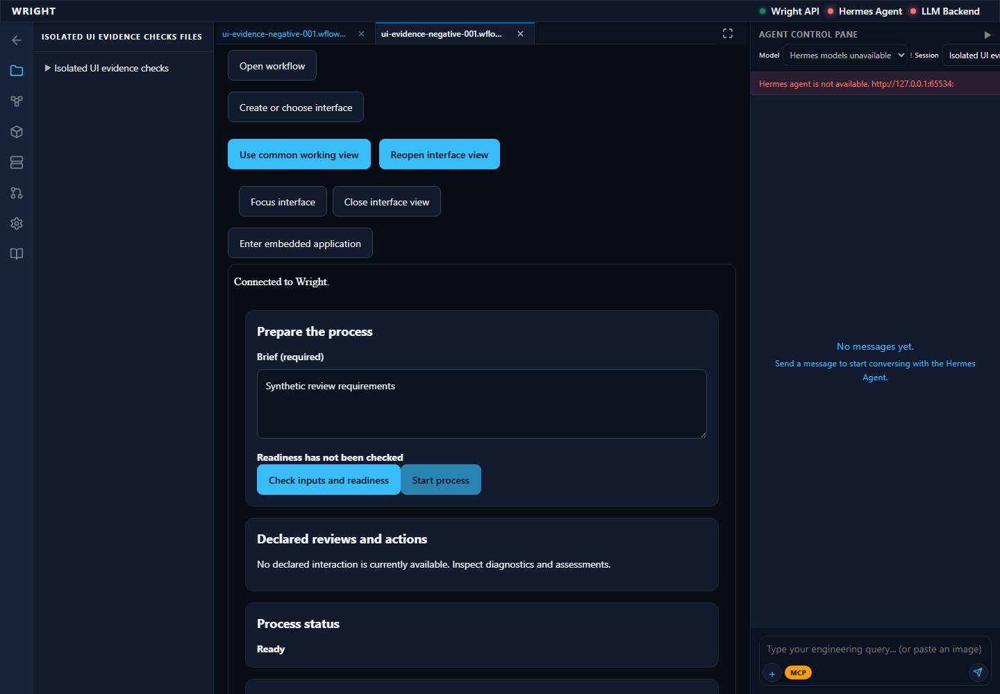
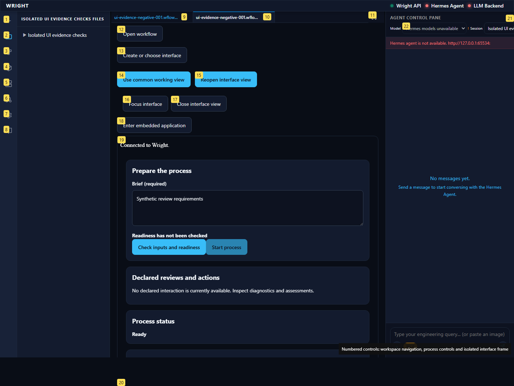

Meaningful compatible source change: the same installed saved UI and common view both render the actual changed accepted input default without inheriting old run/review authority. Original source/default restores through exact CAS. No generation/compiler/execution/decision.
pass
Saved UI renders the changed input default from the current accepted process, without old outputs or review permission.
Expected: Same compiled UI; actual current default and no old run/review
Actual: Saved UI renders the changed input default from the current accepted process, without old outputs or review permission.


Common view shows the same accepted changed default and no historical review. No process is started.
Expected: Same current input basis without old review
Actual: Common view shows the same accepted changed default and no historical review. No process is started.


Saved UI returns to the original accepted default after exact CAS restoration while preserving separate run/review identity.
Expected: Original default; no old review automatically attached
Actual: Saved UI returns to the original accepted default after exact CAS restoration while preserving separate run/review identity.

